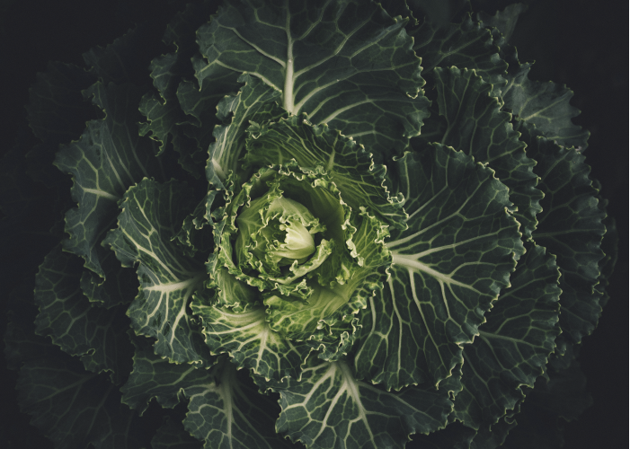
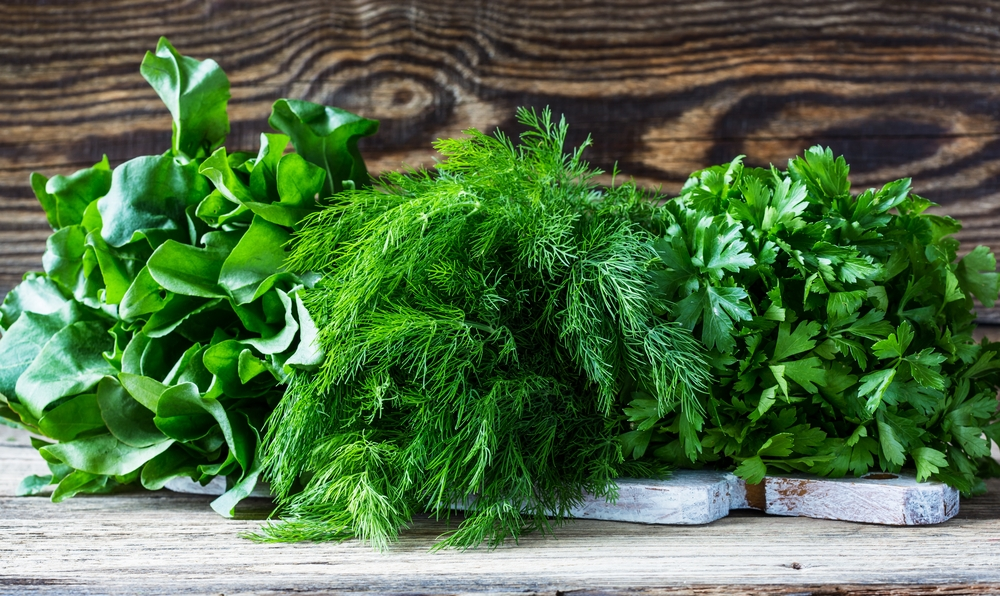
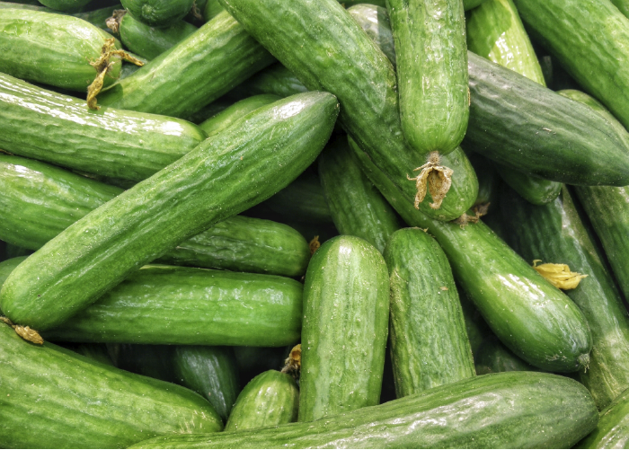
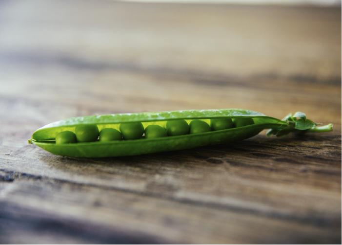
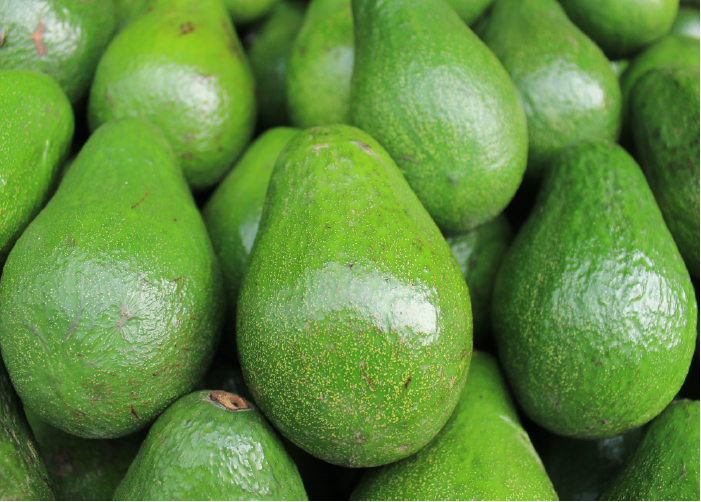

Blog / Green vegetables vs. Aging
Green vegetables vs. Aging
Green vegetables vs. Aging
Who among us does not want to be forever young? Well, if not in the passport, then at least outwardly. But best of all and internally be young! Unfortunately, time can not be stopped. You can only slow down the impact of time on appearance.
The natural light that healthy skin radiates, cosmetic procedures or expensive anti-aging creams can’t provide. Such a light which even the imperfections of your skin or wrinkles can not be afraid of, can only be found in skin, health of which we provide ourselves, from the inside.
In today's world, no one wants to look even a day older than his age, and therefore modern science does not sit idle: how many remedies have been invented and developed, "medicines" for longevity, and the beauty industry is not even worth talking about! But the main secret of beauty, youth and health is still food. Regular use of foods that contain an abundance of vitamins and nutrients works better than any cream.
From experience we know that the state of our skin depends on what we eat. A balanced diet and healthy food will help rejuvenate skin and will shed some years from our true age. Some of the studies have shown that if you eat certain foods, it can greatly affect the reduction of cell damage, that is, slow down the aging process in this way.
Everyone knows that it is very important to eat a large number of vegetables. However, it is not so widely known that the most useful vegetables are green, including in the dealing with aging. Many of them are rich in substances such as carotenoids, zeaxanthin and lutein, beta-carotene, iron, calcium and folate salts. Also, they contain many antioxidants - substances that are simply necessary for the human body. Antioxidants remove free radicals from the body, preventing the development of cancer tumors and premature aging of a body. Also, green vegetables reduce the negative impact on the body from ultra-violet rays.
Skin aging happens due to external and internal causes. The external cause is exposure to skin of the sun's rays (photoaging), which in almost 80% of cases is responsible for premature aging of the skin. Photoaging (as well as skin cancer) is caused by the ultraviolet part of the solar spectrum.

Photo-aging causes dry skin, deep wrinkles, sagging of skin, loss of elasticity and the appearance of pigmented spots. Although your own, or chronological skin aging is programmed genetically, and it is difficult to control, photoaging can be prevented or slowed down.
Other external factors of skin aging are the effects of contaminants and irritants, allergens, smoking and various skin lesions.
The main culprits of skin aging are free radicals. The cause of excessive formation of free radicals can be ultraviolet, contaminants, stress, age changes or illness. Free radicals are very reactive molecules. They attack molecules of fats, proteins, sugars, DNA, causing their oxidation. As a result free radicals damage of lipids, collagen and proteins, skin loses its elasticity, strength and moisture contained in it; Damage of DNA can lead to skin cancer.
Antioxidants reduce the damage to skin by free radicals because they prevent their excessive formation, neutralize the formed free radicals before they damage other molecules, and repair damaged molecules.
Antioxidant defense of a body consists of many components, some of which are formed in our body (endogenous), while others we get from food (exogenous).
The use of external skin care products alone can not ensure its full nutrition and optimal protection, which means it can not keep your skin young and healthy. It is also necessary to ensure that in your diet, products contain the necessary nutrients for skin. The intake of these substances with food or in the form of bio additives has a direct impact on the appearance and health of your skin, although this fact is often given insufficient attention.
Cucumbers for rejuvenation

There is a so-called cucumber diet. It gives an opportunity not only to lose weight by several kilograms but also clears a body of toxins and promotes rejuvenation.
The effectiveness of the diet is determined by the useful properties of a cucumber. It is 95% of water, with structured water that means "live". Thanks to this natural adsorbent, the use of cucumbers helps to cleanse a body. Caloric content of cucumbers is only 15 kcal per 100 grams, while they contain fiber, carbohydrates (starch, fructose, glucose), a little protein, B vitamins, vitamin C, phosphorus, potassium, calcium, organic acids.
To have a full effect of rejuvenation, every morning and before going to bed make a mask of cucumber and rub the skin with cucumber juice. Do not forget that fresh juice has a whitening effect.
Benefit of green peas

Peas are known for their rich nutritional and medicinal properties due to their chemical composition. This vegetable is filled with useful carbohydrates and micro-element, the main place among them is given to magnesium, phosphorus, iron, potassium, iodine and calcium. Among the vitaminized substances, green peas are rich in vitamins of the whole subgroup B, as well as the vitamin PP and C.
The benefit of peas is that the product promotes skin rejuvenation. If you regularly include this bean product in the menu your skin becomes elastic, glowing and young.
Cabbage is the source of youth
Cabbage contains a lot of various antioxidants, including vitamin C, anthocyanins, sulfur and many other useful elements.
Antioxidants play an important role in skin health and generally improve the body's ability to counteract aging. Free radicals can be the main cause of wrinkles, unhealthy skin color, spots and other shortcomings. Consequently, the antioxidants that a body receives from cabbage can cause an inverse aging process allowing you to feel better and look younger.
Why a salad leaf is useful
The salad leaves are extremely rich in vitamin C which is necessary to deal with aging.
Sparrow-grass against aging
The content of folic acid in sparrow-grass is much higher than in other vegetables. In 100 grams of a vegetable contains about 40% of daily rate of this vitamin.
Green sparrow-grass contains a large number of antioxidants, preventing the development of many diseases and, very importantly, premature aging.
Eating asparagus has its limitations. People sensitive to the substances that are in this plant may have an individual intolerance to the product. For example, saponin has an irritant effect on the gastric mucosa, therefore, asparagus can not be eaten during exacerbations of alimentary canal diseases. Asparagus is contraindicated in acute cystitis, prostatitis and articular rheumatism.
Useful properties of arugula
Arugula can slow the skin aging. There are a lot of vitamin C that prevents aging of skin. Vitamin C improves the walls of vessels and this helps to improve a skin condition.
Avocado - a fighter with wrinkles

Avocado is a fruit that is often consumed as a vegetable. Avocados leads the list of products against aging because it contains useful vegetable fat, vitamin E and zeaxanthin. Neither fruit nor nut contains as much vitamin E as avocado. Vitamin E, in turn, is a powerful antioxidant and has a special property to restore skin damage. Avocado is rich in monounsaturated fatty acids which at least help our skin to retain moisture and assure the absorption of carotenoids. D-mannoheptulose positively affects dermis and increases the level of collagen which protects skin from premature wrinkles. Moreover avocado is rich in antioxidants which reduce pigmentation spots. This fruit contains a lot of potassium which keeps skin and blood vessels in good condition. Another important element contained in avocado is glutathione, a potent antioxidant that supports oxygenation of a body. Now it’s clear why this fruit is called a miracle fruit. The saturation of avocado with antioxidants in combination with a lot of potassium and vitamin K helps to maintain youth.
It is enough to consume 0.5-1 avocados three times a week. Add it to salads, smoothies, make from it sauces-dip (guacamole).
Miracle spinach
This product is rich in folic acid, vitamin C, iron and carotenoids.
It contains a lot of antioxidants which prevent the appearance of wrinkles. Carotenoids, that are in it, protect skin and maintain its beauty. Dosage: 200-300 grams of spinach three times a week. Suitable for salads and smoothies.
Potherbs against signs of aging
You should remember about potherbs, because it’s not only a decorative thing but it’s also a stockpot of useful elements. Among green the most beneficial vegetable is parsley. It contains vitamins А, В, С and Е and also minerals such as calcium, potassium, magnesium, phosphorus, zinc, fluorine, iron and selenium. Vitamins C and K make skin smooth. In the composition of parsley there are myristicin, chlorophyll which helps to cleanse blood of toxins, relieves of edema, contributes beauty and youth of skin. Also in the composition of parsley there are flavonoids, essential oils, terpenes, inulin and glycosides. It is recommended to eat 1 large handful of parsley (30-40 grams) 3 times a week. The easiest way is green smoothies and salads with the addition of parsley. Parsley is actively used in cosmetology, it helps to remove swelling, deals with signs of skin aging and whitens it.
Skin also needs the use of celery. It is rich in vitamins A, B1, B2, B6, B9, C, magnesium, iron, phosphorus, phenolic acids and amino acids. Celery is one of the most useful vegetables. It purifies and removes excess fluid from a body. The juice of the celery stalks alkalizes and has an anti-inflammatory effect. It is recommended to drink 400-500 ml of juice twice a week or more often. In addition, celery is excellent for salads and hot dish.
Some gastronomes also consider other vegetables such as peppermint, cucumber grass, nettle, dandelion, and so on as greengrocery. They are also added to salads or other dishes. Many of these herbs have truly unique healing properties.